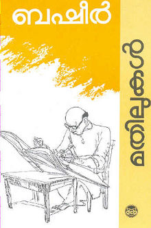

Aarachaar

Oru Deshathinte katha

Mathilukal
Rating(4.5/5)
Rating(4/5)
Rating(4.7/5)
94% liked this book
Google Users
Google Users
95% liked this book
Google Users
Google Users
95% liked this book
Google Users
Google Users
Aarachaar is a Malayalam novel written by K. R. Meera. Originally serialised in Madhyamam Weekly in continuous 53 volumes, the novel was published as a book by DC Books in 2012.
Oru Desathinte Katha is a Malayalam novel written by S. K. Pottekkatt in 1971. It sketches the men and women of Athiranippadam, drawing the history of the country while detailing the micro-history of a place.
Mathilukal is a Malayalam novel written by Vaikom Muhammad Basheer in 1965. It is one of the most cherished and well-known love stories in Malayalam. Its hero, Basheer himself, and heroine, Narayani, never meet, yet they love each other passionately.